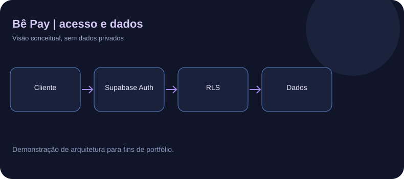

O desafio
Permitir a clientes consultar compras, histórico e parcelas com valores registrados pelo sistema, restringindo as informações de cada pessoa.
Solução em desenvolvimento
O pull request de rascunho contém cadastro, login, recuperação de senha, consulta de compras e crediário, políticas Row Level Security, atualização de dados e preparação de aplicativo web progressivo.
Testes e evidências
O PR privado #36 registra 100 testes automatizados e validações de autenticação, autorização e isolamento entre contas em ambiente de testes. Esses resultados não foram reexecutados durante a criação desta apresentação.
O que ainda não está pronto
Pix, cartão, gateway e carteiras digitais não estão integrados. O projeto permanece em uma branch de desenvolvimento e não deve ser apresentado como sistema de pagamentos publicado.
Minha participação
Defini requisitos e jornadas dos clientes, acompanhei o desenvolvimento assistido por IA, investiguei problemas e participei de testes. Partes significativas do código foram geradas com IA.
